|
Ajax - Roda JC (4-1) 24 september 2005
|
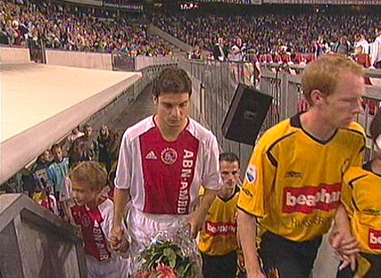
Opkomst van de spelers. Filipovic waarschijnlijk voor het laatst in het geel
en zwart.
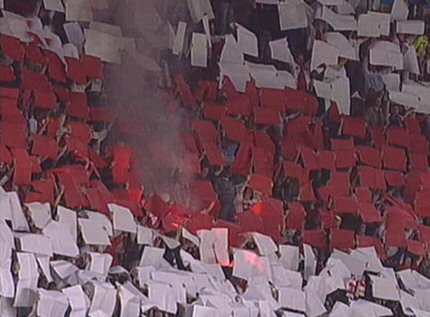
Choreografie met hier en daar een fakkeltje. Ondenkbaar in Kerkrade waar
een übergeiler op zijn strepen staande VC zelfs confetticrackers verbiedt...
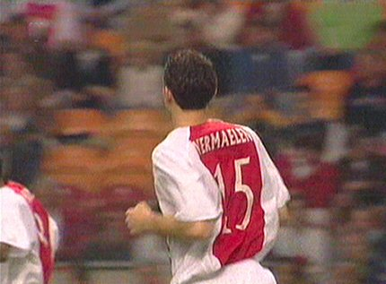
Thomas Vermaelen, de beoogde opvolger van Filipovic, staat verrassend in
de basis bij Ajax.
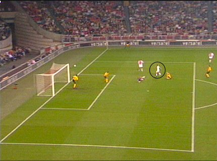
Na ruim 6 minuten knalt Pienaar op de lat.
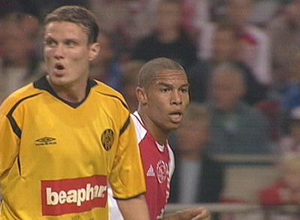
De wedstrijd is dik twintig minuten oud als Nigel de Jong op de paal schiet.
Oper beseft dat Roda met de schrik vrij is gekomen.
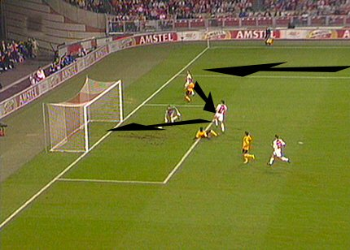
Via Rosales en Pienaar scoort Charisteas 1-0, (27').
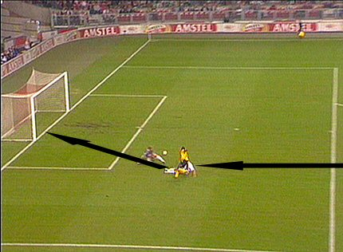
Dieptepass van Emanuelson bereikt Charisteas. Kah kan er niet bij en zo
komt Ajax op 2-0, (40').
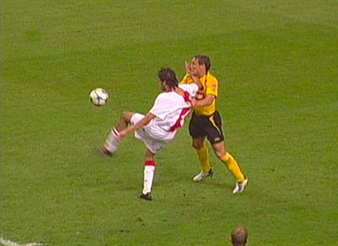
Bodnar lijkt Boukhari binnen de zestien onderuit te trekken. Scheidsrechter
Temmink ziet er geen penalty in.
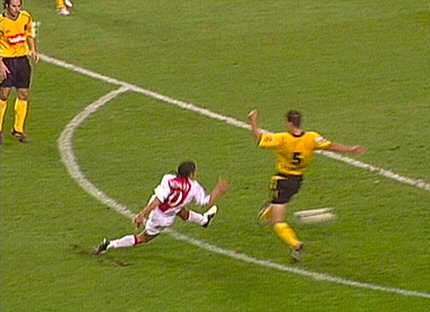
69e minuut, Pienaar: 3-0.
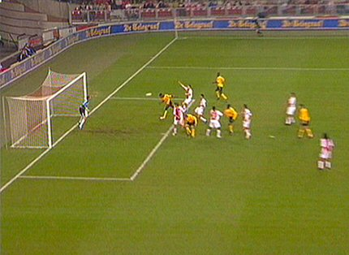
Een vrije trap van Van Dijk bereikt het hoofd van Sonko die mooi inkopt,
3-1, (80').
Door velen afgevallen, maar Edrissa is topscorer van Roda JC.
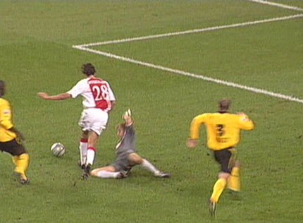
Boukhari krijgt een onterechte penalty.
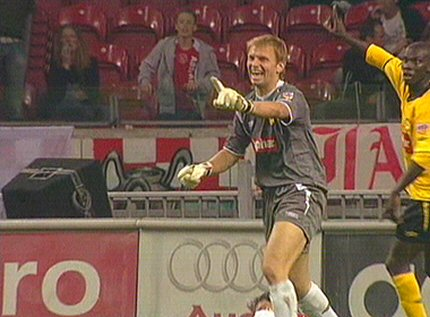
Kujovic noch Kah kunnen Temmink op andere gedachten brengen.
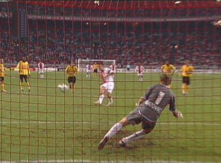
Galasek mag het cadeautje verzilveren door Kujovic naar de verkeerde hoek
te sturen: 4-1, (86').
Omdat RBC vanavond ook verloor blijft Roda voorlaatste op de ranglijst; een
zorgelijke positie.
© Koempels Pleasure Dome
|